¡Conectando a la región para transformar la agricultura!
22-23 de Septiembre de 2026 |  San José, Costa Rica
San José, Costa Rica
El evento inicia en:
1. El Futuro de los Bioinsumos
Tendencias globales, dinamismo del mercado, geopolítica, demanda y políticas públicas que están transformando la agricultura regional.
2. Cómo Generar Confianza
Calidad de insumos, validación y evidencia científica, servicios de laboratorio, producción on-farm vs. industrial y marcos regulatorios.
3. Innovación Biológica
Modelos de transferencia tecnológica, startups, spin-offs, propiedad intelectual e inversión estratégica entre ciencia e industria.
4. Ventaja Competitiva
Productividad, acceso a mercados internacionales, límites máximos de residuos (LMR), normativas como EUDR y resiliencia agrícola.
Conferencistas Destacados
Expertos y especialistas que acompañarán las jornadas del foro
Nuestra Trayectoria
El Foro Panamericano es un esfuerzo sostenido a través de los años para la consolidación agroecológica.
 Panamá 2023
Panamá 2023
El Inicio del Diálogo Regional
Establecimiento de las primeras mesas técnicas y articulación de necesidades prioritarias por país.
 Uruguay 2024
Uruguay 2024
Marcos Regulatorios e Intercambio
Enfoque en la armonización de normativas biológicas y registros sanitarios transfronterizos.
 Colombia 2025
Colombia 2025
Evidencia y Adopción Comercial
Impulso a la validación en laboratorios y al financiamiento de biofábricas comunitarias.
Apoyo Institucional y Coordinación


Información del Evento y Sede
Las actividades principales de la Bioinputs Americas Week 2026 se llevarán a cabo de forma híbrida desde San José, Costa Rica.